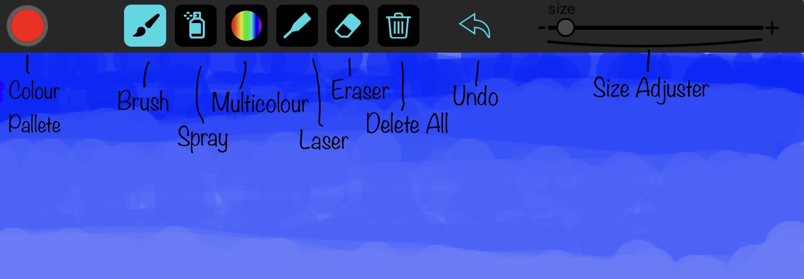
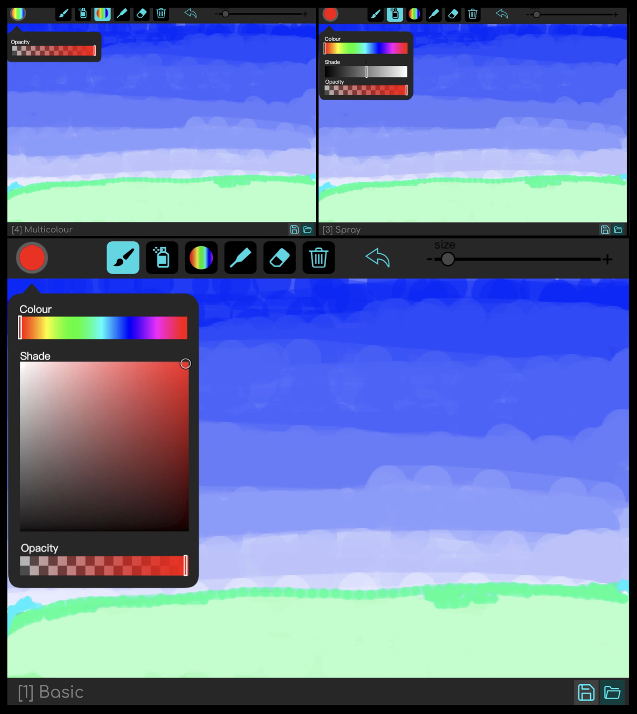
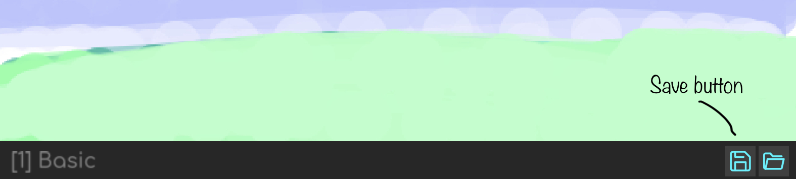
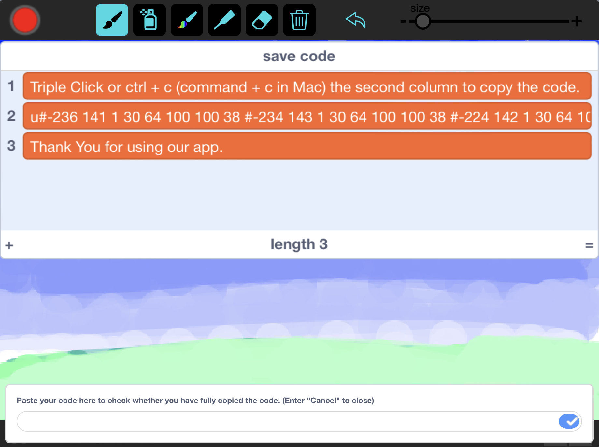

Introduction
Paint is an amazing Painting Application created using SCRATCH. You can find the project here.
Navigation
Paint is divided into three main parts: Toolbar, Taskbar and the Canvas where you draw.
Tool Bar
The Tool Bar is the place where you select the Tool, adjust Colours and tool Size.
Task Bar
The Task Bar is the place which shows the Tool you are using and has Save and Import options.

Canvas
The Canvas is the place where you draw
Tools
Paint offers you 7 amazing tools: Basic Brush, Smooth Brush, Spray, MultiColour, Laser, Eraser and Delete All.
Brush: Basic
Basic Brush is a normal brush which you use to draw.
Brush: Smooth
Smooth Brush is same as Basic Brush but it has a smooth movement(delay movement) which makes easier to draw some shapes.
Spray
Spray is a tool which sprays on the Canvas which helps you to make colour textures
Multicolour
Multicolour is a special tool which continuesly changes the pen colour when draw. This tool helps for colourful art.
Laser
Laser is a simple tool which is used to point something. This can be used to point out something in the drawing while presenting a drawing or an information.
Eraser
Eraser is just a simple tool which is used to erase.
Delete All
Delete All just clears all the drawing in the canvas. Don't worry if you mistakely clicked the Delete All button, it first asks confirmation and then deletes the drawing. Note: When you delte the drawing, then you can't undo this action.
Colours
There are three types of colour palette in Paint, because of different colour combinations for different tools. Click the Colour Display to open Colour Pallete and then choose your colour
Save/Import
Saving your Artwork
Paint saves your artwork with an Unique Save Code.
Step 1: Click the Save button at the bottom right corner of the screen.
Step 2: Copy the Unique Save Code in the second coloumn of the List and keep it SAFELY.
Step 3: Now paste the Copied Code in the text box at the bottom of the screen to double check wether you have fully copied the code or just enter "cancel" to close it.
